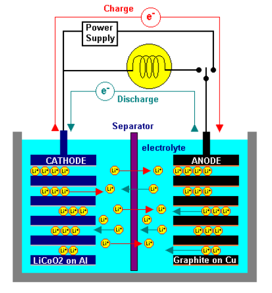
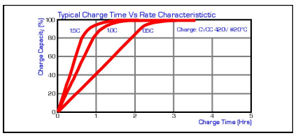
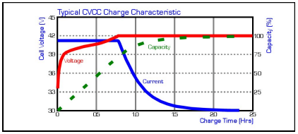
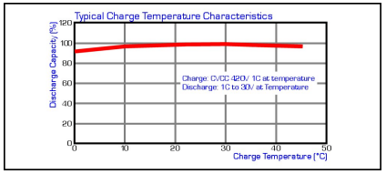
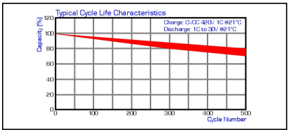

Basics OF Charge Characteristics
Overview
Lithium Ion (LiIon) has become the predominant battery technology for handheld electronic applications in recent years due to its high energy density, high voltage, good cycle life and excellent storage characteristics. It has many advantages over Nickel Cadmium (NiCd) and Nickel Metal Hydride (NiMH) technologies but also some restrictions due to it’s differing principal of operation. This technical manual looks at the principles of LiIon technology, it’s main advantages and disadvantages and how to charge and discharge it efficiently and safely. Unlike similar documents produced by the main cell manufacturers this manual looks as the technology as whole and is therefore more general and open in it’s approach, providing non-manufacturer specific information which will give the reader an understanding that can be applied to all LiIon technologies.
History
Rechargeable Lithium metal batteries were commercialized in the 1980’s but failed in the market due to safety concerns associated with the Lithium metal. It was found that dendritic growth lead to an increased area of lithium metal which could lead to thermal runaway. Increased heating of the cell caused a reaction with the flammable electrolyte resulting in explosion. As a result, Lithium metal cells were withdrawn from the market. Rechargeable LiIon cells were commercialized by Sony in 1991 – and it is basically this technology which is still used by manufacturers of cells today. These cells contain no metallic Lithium – instead a carbon based negative electrode (originally coke but now graphite) and a Lithium transition metal oxide positive electrode are used. LiIon cells have proven to be extremely safe with many hundreds of millions of cells shipped with very few reported incidents.
Features and Benefits of Lithium Ion Cells
High Energy Density
LiIon cells weigh around half that of a NiCd or NiMH cell of the same capacity. In addition LiIon cells are 40 to 50% volumetrically smaller than NiCd cells, and 20- 30% smaller than NiMH cells.
High Voltage
The average voltage of a LiIon cell (3.6-3.7V) is equivalent to three NiCd or NiMH cells (each 1.2V). This means that one cell is all that is required for many of today’s portable electronic devices (Mobile phones, MP3 players, GPS etc).
High Drain Capability
LiIon cells can typically be discharged at rates up to 1.5C continuous. High capacity, higher drain multi-cell packs are achieved by connecting multiple cells in parallel – something which is not easily done when using NiCd or NiMH cells.
- Environmentally Preferred LiIon cells are free from metals such as Mercury, Lead and Cadmium – they meet the requirements of the Toxic Chemicals Directive 91/157/EEC.
- Lithium Metal Free Unlike primary Lithium metal (non rechargeable) cells, Rechargeable LiIon cells do not contain Lithium in its metallic state – making them less restrictive to transport.
- Long Cycle Life When charged and discharged under normal conditions, the life of a LiIon cell is typically between 300 and 500 cycles.
- Allow Flexible User Patterns LiIon cells are free from the so called ‘memory effect’ which can be seen to reduce the capacity of NiCd cells after numerous shallow charge/discharge cycles. This makes ownership easier for the end user.
- Fast Charge Capable LiIon cells can be fast charged with around 70-80% of typical capacity being available after around 1hr when charged at 1C.
- Wide Environmental Operating range LiIon cells can typically be charged between 0°C and +45°C, and discharged between –20°C and +60°C. Specialist cells are available for operation outside this range allowing discharge operation between –40°C and +70°C..
Principles of Operation
The LiIon battery is made of a substance capable of cyclic transfer of Lithium ions between two electrodes. The cell operates what is sometime known as the ‘rocking chair’ principle – that is charging and discharging of the cell cause Lithium ions to ‘rock’ back and forth between the positive and negative electrodes. Since neither the anode nor the cathode materials essentially change, the operation is safer than that of a Lithium metal battery.
Chemical process:
LiCoO2+Cn ⇔ Li1-xCoO2+CLix
The internal construction of a LiIon cell varies depending on the particular design of the individual cell supplier, however the following description is one that can be read across most cells currently available.
Lithium Ion cells (cylindrical or prismatic) feature a wound construction with the following components making up the cell contents:
- The positive electrode (cathode) has a current collector made of thin Aluminium foil coated in Lithium and Cobalt metal oxides (LiCoO2)
- The negative electrode (anode) has a current collector made of thin Copper foil coated in graphite carbon.
- The separator is a fine porous polypropylene or polyethylene film.
- The electrolyte is an organic solvent with LiPF6 dissolved in it. The wound cathode/separator/anode plus electrolyte are contained within a metal (steel or aluminium) can and sealed with a cap. The cap usually contains the mechanical vent mechanism which releases internal cell pressure under abusive conditions and a positive temperature coefficient (PTC) device to limit current in a short circuit or other abusive condition. In some cells, an additional current interrupter is also included which acts to remove the cell from the external circuit in an overcharge situation.
Operational Characteristics:
Charge Characteristic
Overview
LiIon cells require a dedicated constant voltage/current limited charger for safe and reliable operation. The charger limits the current until the voltage across the cell reaches 4.20V, at this time, the charger changes to constant voltage operation and the current will begin to taper down towards zero.
Time
Due to the initial constant current portion of the charging process, the most efficient portion of the charge occurs early in the charge cycle. Typically, around 80% capacity can be achieved after 50% of the total charge time when charged at the 0.5C rate. Although the charge current will taper down to a very low level, a redundant timer is required to terminate charge after 2.5Hrs for a 1C charge and 4Hrs for a 0.5C charge to prevent permanent damage to the cell.
Current
The constant current portion of the charge should be limited to 1C Max. Once the constant voltage portion of the charge is entered, the current will taper down towards zero. Charge should be terminated when the current drops to between C/20 and C/40mA.
Effect of Temperature
Cell temperature should reside between 0°C and +45°C for charging to commence. LiIon cells are most efficient when charged between +20°C and +45°C and capacity will be reduced by a few percent if charged between 0°C and +10°C due to the inefficiently of the charging process at these low temperatures.
Discharge Characteristics
Voltage
During discharge, the voltage of a charged LiIon cell will steadily drop from an initial 4.2V once loaded. Unlike NiCd or NiMH cells the voltage profile exhibits less of the plateau seen with these two chemistries although a rapid reduction in voltage is seen towards end of discharge resulting in a characteristic ‘knee’ on the profile. The discharge should be terminated when the cell reaches an end of discharge voltage (EODV) of 3.0V (although the EODV can be as low as 2.7V depending on the application, number of cells, cell type etc). Failure to terminate discharge can result in the copper of the anode dissolving into the electrolyte leading to permanent damage - It is for this reason that a voltage sensing protection circuit is fitted to prevent over discharge of any one cell (see protection circuits and devices).
Current
Discharge current should be limited to a maximum of 1.5C per cell as discharging at higher rates (especially at high temperatures) may result in activation of the internal cell PTC. Battery protection devices should be designed to prevent over current conditions from occurring prior to cell PTC activation (see protection circuits and devices)
Effect of Temperature
LiIon cells exhibit excellent capacity return between +20°C and +60°C. Between 0°C and +20°C there is usually a slight reduction in capacity as the discharge reaction becomes less efficient. Between -20°C and 0°C there is a significant reduction in operating voltage and returned capacity especially at high discharge rates. It is for this reason that the majority of cell manufacturers show 0.2C discharge profiles at low temperatures. At the 1C rate the voltage profile and capacity can be extremely poor and the performance will only deteriorate as the cell ages and the internal resistance naturally increases. It is therefore recommended that empirical testing is conducted on applications where low temperature performance is required to ascertain if performance is adequate.
Cycle Life Characteristics
The life of a LiIon cell is typically 300-500 cycles depending on the application and environmental conditions in which it is used. In reality, applications never cycle the batteries in the manner indicated on manufacturers data sheets (CC/CV 1C 4.20V charge for 2.5Hrs at 21DegC followed by a 1C discharge to 3.0V/cell) so the cycle life number on the data sheet number becomes less important.
